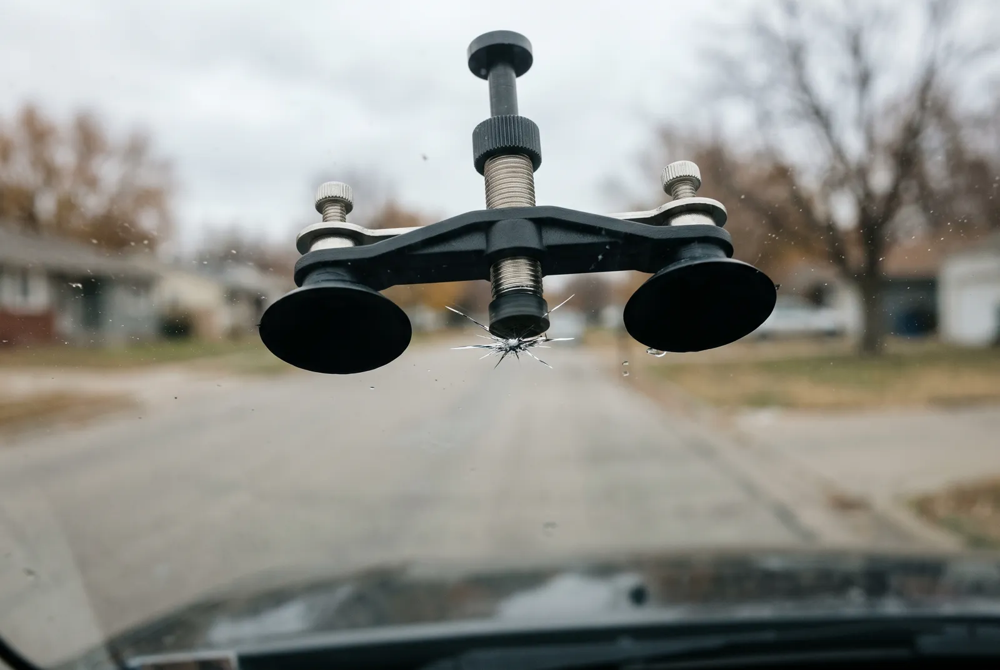

Windshield Rock Chip Repair in Wichita, KS
Rock chip repair in Wichita stops a small windshield chip from turning into a long crack. We inject resin into the break at your home or job site, it takes about 30 minutes, and many insurance policies cover it. Call (316) 669-4751 while the chip is still small.
What Does Rock Chip Repair Involve?
The technician cleans the chip and mounts a small bridge tool over it. The tool pulls air out of the break and pushes clear resin in to fill every leg of the chip.
A UV lamp hardens the resin, then the surface is scraped flush and polished. The chip won't disappear completely, but it usually fades to a faint mark, and it stops spreading. Rock chip repair in Wichita takes about 30 minutes, and you can drive right away.

When Do You Need Chip Repair?
- Star breaks or bullseyes smaller than a quarter
- A short crack under about six inches
- A chip you noticed in the last few days, before dirt gets in
- Any chip, before the first hard freeze of the Wichita winter
Here's a tip: put a piece of clear tape over a new chip until we get there. It keeps out dirt and water. People often ask, "Will it spread if I wait a week?" Maybe not. But one cold January morning is all it takes.
Why Do Small Chips Turn Into Cracks?
A chip is a weak spot with tiny legs running out from it. Every bump, every slammed door and every temperature swing pushes on those legs.
In Wichita the big trigger is weather. A cold morning, a hot defroster blast, or a sunny afternoon after a freezing night can split a chip across the glass in seconds. Car washes with cold water on a hot windshield do it too.
What Affects the Cost of Chip Repair in Wichita?
Chip repair costs far less than a new windshield, and many insurers waive the deductible for it because it saves them a replacement. What changes the quote:
- How many chips need filling
- Whether insurance is paying
- Whether the chip is too close to the edge or too big to repair
Call (316) 669-4751 and we'll tell you whether your chip qualifies.
Chip Repair vs. Windshield Replacement: Which Do You Need?
Chip repair is right when the damage is small, fresh and away from the edge and the driver's line of sight. It keeps your original factory seal in place.
Replacement is the answer once a crack runs long or the damage blocks your view. If your chip has already spread, see windshield replacement in Wichita.
Frequently Asked Questions
How big of a chip can be repaired in Wichita?
Most chips smaller than a quarter and single cracks under about six inches can be repaired with resin. Chips right in front of the driver or at the edge of the windshield usually need a replacement instead, even if they’re small.
Does insurance cover rock chip repair in Kansas?
Many Kansas comp policies cover chip repair, and a lot of carriers waive the deductible for it because a repair costs them less than a new windshield. Call your insurer or call us and we’ll help check.
Will the chip be invisible after repair?
Usually not completely. A good resin repair in Wichita fades most chips to a faint spot you have to look for, and the main goal is stopping the chip from spreading into a crack.
Cracked glass in Wichita? Get it handled this week.
Call and tell us the year, make and model. We’ll give you a straight quote and a time slot.